Central de Pasajes: from buying tickets to a travel companion
Location
Argentina
Year
2025
Role
Product Designer
Scope
Product design
Central de Pasajes is an Argentine platform with more than 14 years of history that brings together more than 3,000 destinations and dozens of bus companies to search, compare and buy tickets without going to the terminal.
This case study is the final project of the UX/UI diploma program taught by the Universidad Tecnológica Nacional, with no link to the company and no internal data: we researched using public sources and our own surveys and interviews.
The app works for buying, but it feels basic, outdated and not very trustworthy beyond that moment. That gave rise to the question that guided the work:
How might we turn a ticket-buying app into a reliable, modern and complete travel companion, before, during and after the trip?
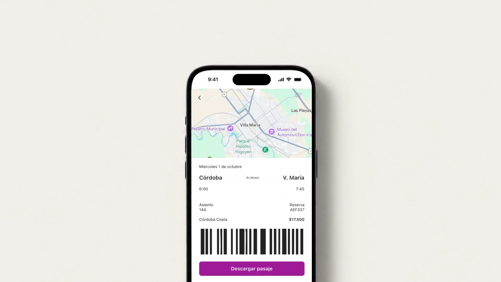
Stage 1 · Empathize: understanding the traveler and the market
Through a research process using different methods (benchmarking, review and trend analysis, surveys, interviews and personas) we arrived at the following insights.
Key insights
- Trust is the foundation of the purchase. Interviewees trust an app with a security padlock, fast human contact and positive reviews; they distrust a dated design or one without clear support or refunds.
- The current app doesn’t create that bond. 87.5% already bought tickets online, but half almost never use Central de Pasajes, and those who do rate it 2 or 3 out of 5: they describe it as confusing, slow and unattractive.
- The post-purchase experience is neglected. Delays, changes or a lack of real-time information breed distrust, and references such as Aerolíneas Argentinas or Omio already solve this with notifications.
- There is an opportunity for added value. Accommodation, tours and car rental were the most requested services, and most would use a points program. The trend is moving from selling tickets to platforms that integrate the whole trip.
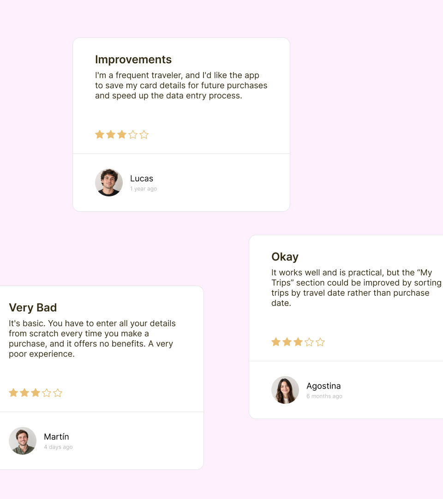
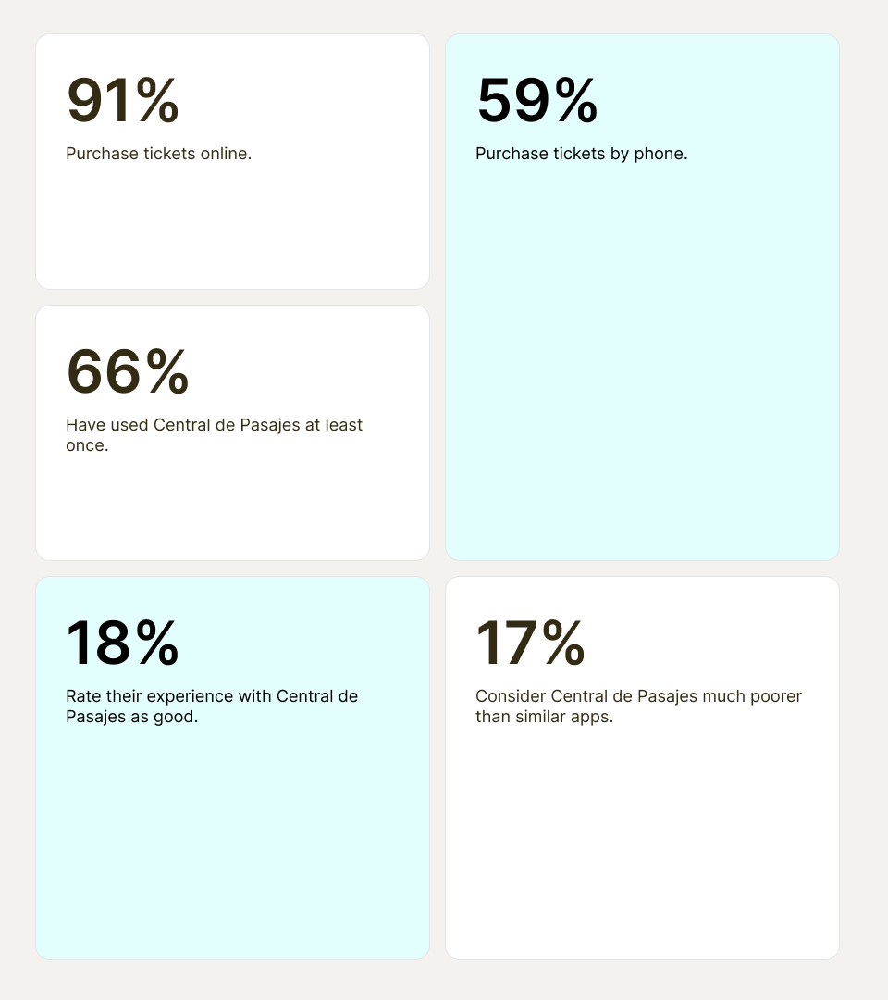
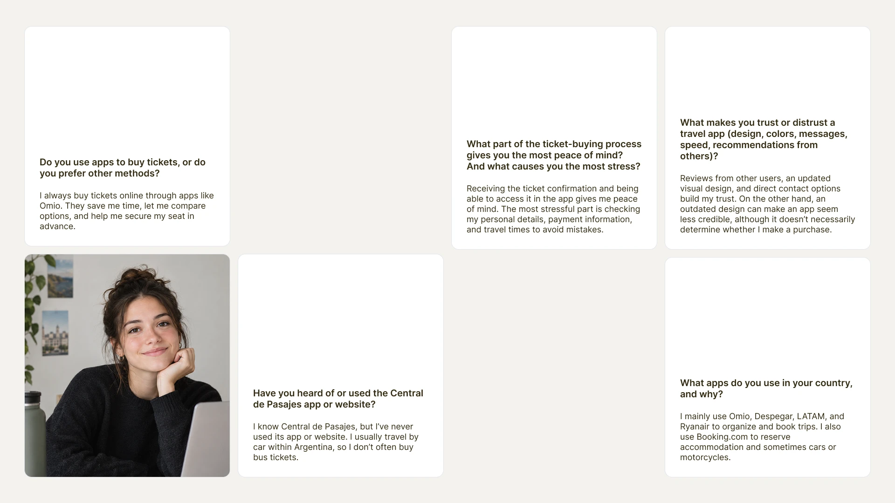
Stage 2 · Define: from insight to problem
Based on the insights, we worked with a needs matrix, a Nielsen heuristic evaluation and a Lean UX Canvas to move from data to the problem to solve.
Problem definition
- The problem isn’t a missing purchase function, but a lack of support and trust. The app meets eight of ten heuristics, but fails on efficiency of use (it doesn’t let you repeat a recent search with one tap) and on aesthetic design, and feels dated.
- Five opportunity areas: all-in-one app, safety and support, visual trust, personalization and loyalty.
- Hypothesis: if we integrate services, real-time alerts, personalization and benefits, usage and loyalty will increase. Assumptions to validate: +20% conversion, −25% support inquiries, 40% benefit adoption and +30% repurchase within six months.
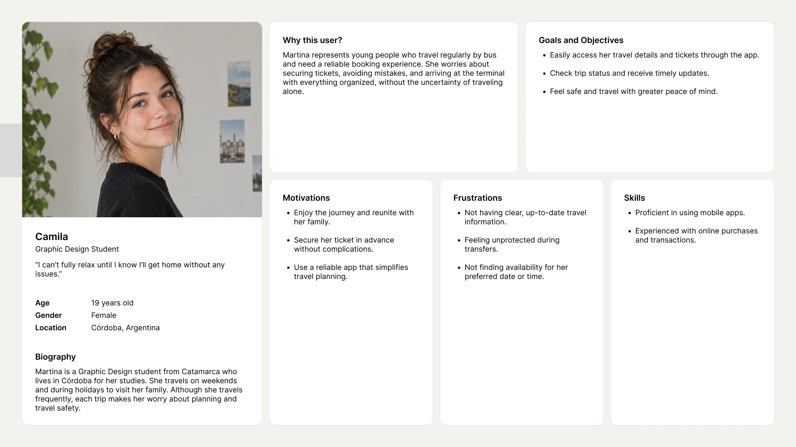
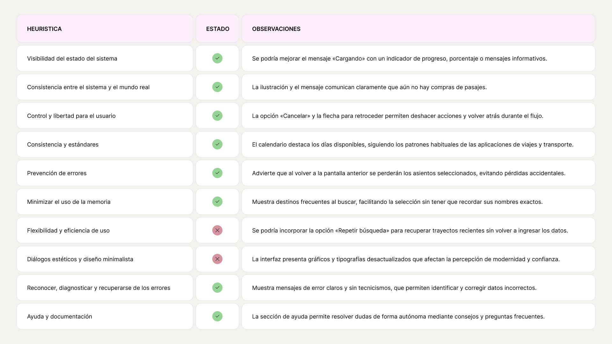
Stage 3 · Ideate: prioritize and structure
With the problem defined, we prioritized with an FVD matrix, mapped a real trip with Martina’s journey map, redesigned the information architecture and defined the MVP.
Key decisions
- Build first what delivers the most value and is easiest to do: a unified services panel, automatic notifications, a trustworthy interface and a rewards panel. Personalization AI and dynamic offers were left for the future.
- Address the anxiety peaks in Martina’s journey: when looking for a seat, when entering her card and when traveling without knowing whether everything is going well. We turned them into clear confirmations, reminders, a map with estimated arrival and automatic alerts.
- Organize the app around the trip, not just the purchase: we went from five loose sections to four (Search, Explore, My trips and My profile).
- MVP: ticket search, trip details, automatic notifications and help with contact.
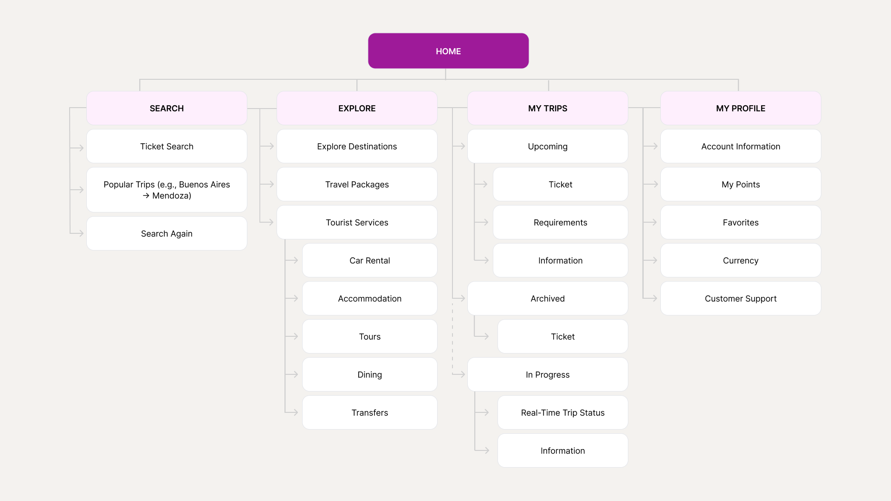
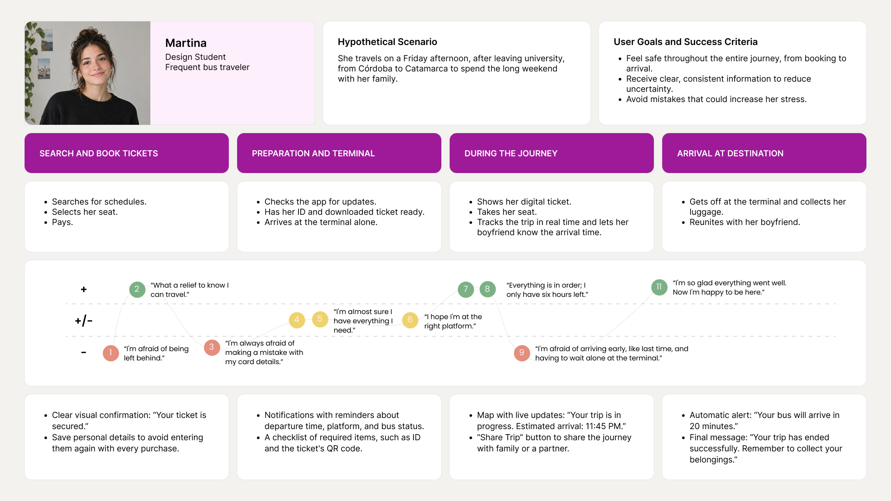
Stage 4 · Prototype: from wireframes to a high-fidelity prototype
We moved from architecture to product with task flows, a wireflow, wireframes in three fidelities, a moodboard, a design system and a high-fidelity prototype in Figma.
Key decisions
- From flow to screen, in three steps: first the structure and the journey, then recognizable components and patterns, and finally the visual identity, imagery and microinteractions.
- An identity that modernizes without losing the brand: the moodboard (violet, turquoise and dark gray) keeps the brand’s violet, and the design system in Figma holds consistency across screens.
- Decisions backed by UX laws: Miller (six rental companies visible), Fitts (large “Descargar pasaje” (Download ticket) button within thumb’s reach), Jakob (profile with the familiar pattern) and Von Restorff (dark block for redeeming points).
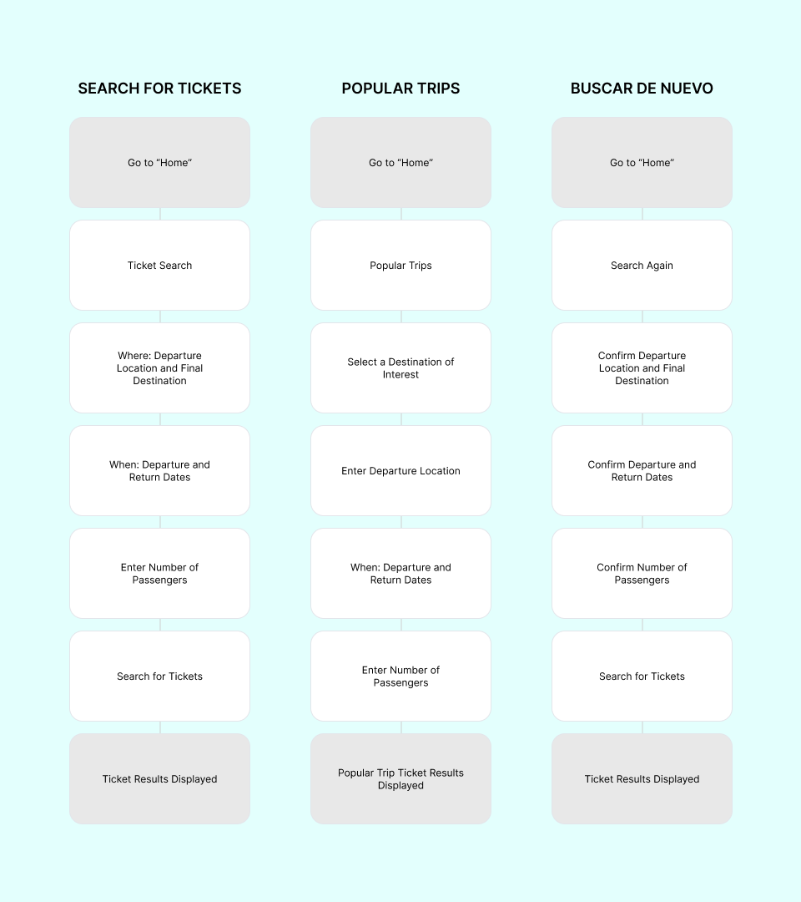
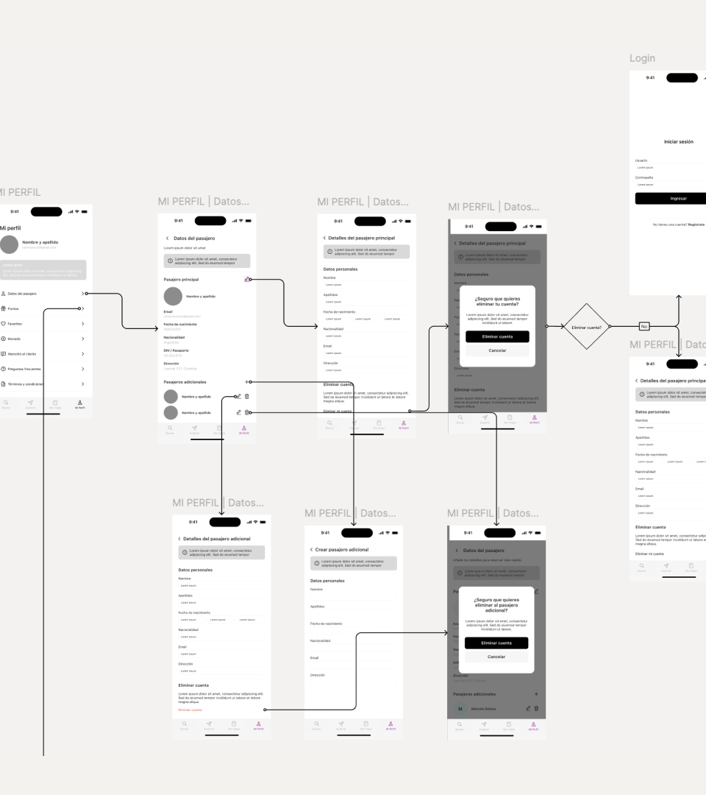
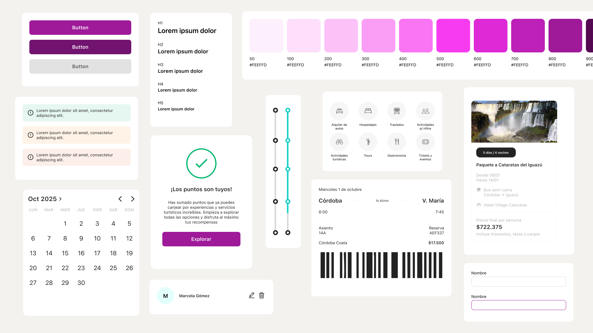
Stage 5 · Test: validate and iterate
We validated the design on three levels, with tree testing, user testing and A/B testing, and each one led us to change something.
What we learned
- The purchase structure is clear, but support and account management are confusing. In the tree testing (8 participants), unclear labels dropped direct success to 38% on the task of checking trip status. We iterated the architecture.
- The flow works, with specific friction points. In the user testing (5 users), 24 of 25 tasks were completed and satisfaction ranged from 3 to 5 out of 5. The issues: a confusing calendar, a lack of confirmations, inconsistent currency and low contrast in the navigation bar.
- Excursions were hard to find. In the A/B testing of the package flow, both variants showed the same friction: the “Adicionales” (Extras) tab wasn’t understood and there was no feedback when adding one.
This produced an iterated flow with three changes: renaming “Adicionales” (Extras) as “Experiencias” (Experiences), integrating excursions into the main flow and showing a visible confirmation (“¡Excursión añadida!”, Excursion added!).
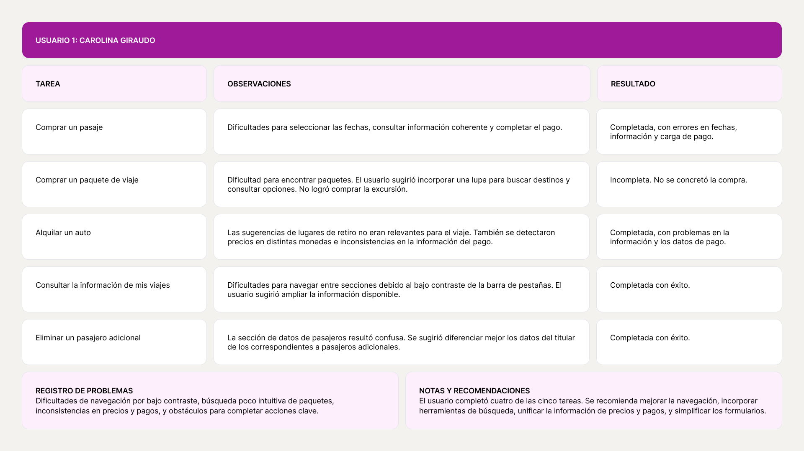
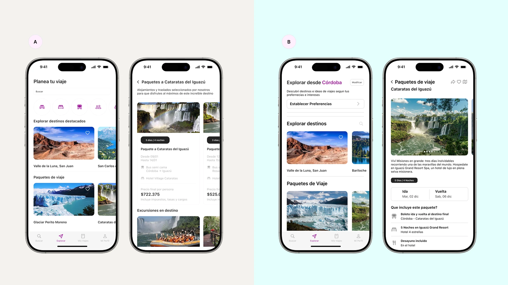
Conclusion
We started with an app that worked for buying but didn’t build trust, and ended up with a prototype that turns it into a travel companion: search with “Buscar de nuevo” (Search again), packages with accommodation and excursions, trip tracking and a panel of redeemable points. The process left us with a conviction: combining methods avoids deciding by intuition, testing early detects concrete friction even with few users, and copy and labels weigh as much as the visuals.
Next steps: test with more users and with frequent travelers, validate the notifications and the points program, and measure the metrics set out in the Lean UX Canvas.
Team
Katarina Ravnik · UX/UI Designer
Florencia Ceresa · Product Designer
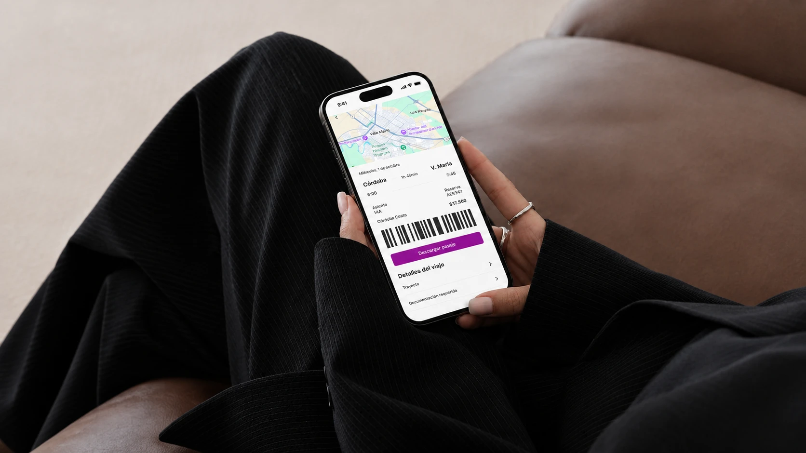